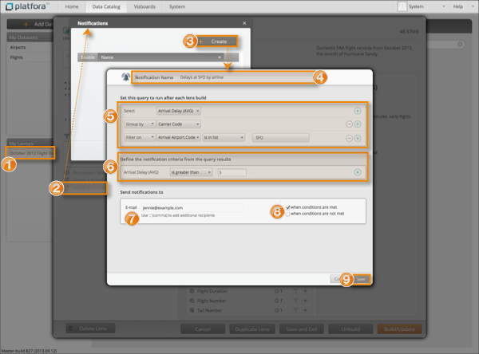

Define a lens notification rule so Platfora sends an email to notify users when the
data in a lens build meets specified criteria. You can define multiple rules per
lens.
To add a lens notification rule, you must be at least an
Analyst role or above. You must have
Edit object permissions on the lens and data access
permissions on the dataset, as well as any datasets that are included in the lens by
reference.

-
Open the lens for which you want to define a lens notification rule.
-
Click Notification rules.
-
In the Notifications dialog, click
Create.
A dialog appears where you can define a lens notification rule.
-
Enter a name for this notification rule.
-
Define the query to run against the lens after the lens is built.
You must select one measure field, and you may select zero or more
dimension fields. You can group by dimension fields, and filter the scope of
rows by either dimension or measure fields. Click the icon to include more fields in the
query.
-
Define the criteria in the query results that triggers Platfora to send the
email notification.
Select the icon to define additional criteria.
-
Enter one or more email addresses that should receive the notification
messages.
Separate multiple email addresses with commas (,).
-
Choose whether the lens notification email should be sent when the criteria defined here are met or not met.
-
Click Save.
The lens notification rule is created and enabled by default.